Professional - data science | energy | sustainabilitySzakmai - adattudomány | energia | fenntarthatóság
Personal - science | development | datactivismSzemélyes - tudomány | fejlődés | dataktivizmus
Research - energy transitions | system dynamics | sustainabilityKutatás - energiaátmenetek | rendszerdinamika | fenntarthatóság
Projects - data blogs | workshops | development outreach | karateProjektek - adatblogok | workshopok | fejlődés | karate
Visualizations - interactive websites | data visualizations | infographicsVizualizációk - interaktív weboldalak | adatvizualizációk | infografikák
Models - system dynamics | agent-based modeling | data scienceModellek - system dynamics | agent-based modellezés | adattudomány
Presentations - research updates | latest workshopsElőadások - kutatási eredmények | workshop hírek
Contact - researcher | thinker | modeler | blogger | travellerKapcsolat - kutató | gondolkodó | modellező | blogger | utazó
Isten hozott!
Köszönöm, hogy ellátogattál személyes weboldalamra, Welcome!
Welcome
Thank you for visiting my personal website, Isten hozott!
PRÓBÁLJ
KIVALAMI
ÚJAT
MINDEN NAP
TRY
SOMETHING
NEW
EVERYDAY
csaladen.es
Let me guide you through my website!
Hadd vezesselek körbe weboldalamon!
Dénes CsalaCsala Dénes


Bio
"Per aspera ad astra"
Visit my LinkedIn profile for my education, experience and professional aspirations!
Látogass el a LinkedIn profilomra az oktatásom, tapasztalataim és szakmai célkitűzéseim megtekintéséhez!
LinkedIn
LinkedIn
Education, experience, courses & awards
Oktatás, tapasztalat, képzések és díjak
Research portal
For my publication record, please visit my university research portal
A publikációkönyvtáram megtekintéséhez kérlek látogasd meg az egyetemi kutatói portált
Research
Research
Kutatás
My university research portal profile presents all my academic work, including journal articles, conference presentations and teaching documents.
Az egyetemi kutatói profilomon meg- találod akadémiai munkáim: szaklapok- ban publikált cikkeket, konferencia-bemutatókat és tanítási anyagokat.
Research portal
Academia.edu
View my profile and follow my research on:
Látogasd meg a profilom és kövesd a munkám!
Academia
ResearchGate
View my profile and follow my research on:
Látogasd meg a profilom és kövesd a munkám!
ResearchGate
Let's work together!
Dolgozzunk együtt!
Hire me for data science or energy-related projects on a consulting basis.
Tanácsadás adattudomány és energia-projektek terén
Upwork
Személyes
Kutató, blogger, utazó és örökös tanuló: Itt megtalálod az összes szórakozásom és közösségi profilom.
Personal
Researcher, blogger, traveler and perennial learner: Here you can find all of my social activities and profiles.
Facebook
Stay updated with my out-of-office life. My profile on
Kövesd íroasztalon kívüli életem.
Videos
Videók
Follow my channel on
Kövesd a csatornám...
YouTube
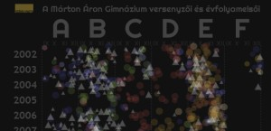
English data blog
Angol data blog
Check out my data analyses and visualizations on my
Csekkold adatelemzéseim és vizualizációim!
Data blogAdatblog
Simulations
Szimulációk
Check out my dynamic simulation models on
Tekintsd meg dinamikus szimulációs modelljeim:
RunTheModel
Summit log
Csúcsnapló
Check out the peaks I summit on my profile on
Kövesd a csúcsokat ahol mászok.
Peakery
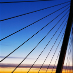
Napicool blog
Napicool blog
Follow the music, pics and videos I heart on my blog at
Kövesd kedvenc fotóim, zenéim és videóim.
Napicool
Hungarian data blog
Magyar data blog
Check my Hungarian langauge data blog about Székelyland and Transylvania.
Székelyföld, Erdély és a nagyvilág a Big Data korszakában.
SZÉKELYDATA
Kutatás
Rendszer és adatkutató vagyok fenntartható fejlődés és energiátmenetek terén és a munkám sokszínű..
Research
I am systems and data scientist and my research spans over a wide range of fields..
PresentationsElőadások
Go to the
presentations page for slides and recordings.Lépj az előadások oldalra diák és felvételek megtekintéséhez.
UpcomingKövetkező
EROEI of CCS plants
Energy policy sync
Energy storage & trade EROEI CCS erőműveknél
Energiapolitikaszinkr.
Energiatárolás és keresk.
Energy policy sync
Energy storage & trade EROEI CCS erőműveknél
Energiapolitikaszinkr.
Energiatárolás és keresk.
Policy Synchronization
Ongoing research project on energy policy synchronization
Folyamatban levő kutatás energia-tervezetek szinkronizálásáról
POLSYNC model
2017
Networked Energy
Ongoing research project on networked energy transitions
Folyamatban levő kutatás energia-átmenetekről
NETSET model
2016
Energy Transitions
Ongoing research project on energy transitions
Folyamatban levő kutatás energia-átmenetekről
SET model
2016
Food Energy Flows
Ongoing research project on food energy flows
Folyamatban levő kutatás az agrikultúra energia- folyamatairól
FOOD model
2016
Networked EnergyÖsszekapcsolt Energia
Article in Energy PolicyCikk a Energy Policy-ban
Preprint on arXivKézirat arXiv-on
Masdar PhD thesisdoktori dolg.
Interactive WebsiteInteraktív Weboldal

Sustainable Aviation
Dynamic transitions in the global air transportation system
Dinamikus változások a globális légiközlekedési rendszerben
GAIDT model
2013

Insurgent Dynamics
Ongoing research project on protest & conflict dynamics
Folyamatban levő kutatás a konfliktusok és tüntetések dinamikájáról.
SIV model
2014
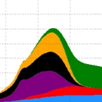
ModelsModellek
Go to the
models page to try out live simulation models.Lépj a modellek oldalra, előben hogy próbáld ki a szimulációkat.
PublicationsPublikációk
View my profile and follow my research on: Academia.edu.Látogasd meg a profilom és kövesd a munkám az Academia.edu-n.
Insurgent Dynamics
Refugee Flows
Interactive Website 1Interaktív Weboldal 1
Interactive Website 2Interaktív Weboldal 2
Blog post 1Blogbejegyzés 1
Blog post 2Blogbejegyzés 2
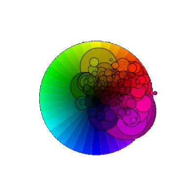
Colorful Development
Research project of personal interest on the dynamics of the inequality of the Human Development Index
Személyes kutatás a Human Development Index egyenlőtelenségének fejlődéséről.
RGB-HDI
2015
Projektek
Itt megtalálod különböző projektjeim!
Projects
Here you find all of my projects and endeavours!
PresentationsElőadások
Go to the
presentations page for slides and recordings.Lépj az előadások oldalra diák és felvételek megtekintéséhez.
VisualizationsVizualizációk
Go to the
visualizations page for an interactive gallery.Lépj a vizualizációk oldalra az interaktív galéria megtekintéséhez.
ARC initiative
participation
collaboration
sustainabilityrészvétel
kollaboráció
fenntarthatóság
collaboration
sustainabilityrészvétel
kollaboráció
fenntarthatóság
ARC initiative
ARC initiative
Workshops on 3-pillar
sustainable development
and energy.Workshopok fenntartható
fejlődésről és energiáról.
Project WebsiteProjekt Weboldal
Try something new
Próbálj ki valami újat
Check out my data analyses and visualizations on my
Csekkold adatelemzéseim és vizualizációim!
Data blogAdatblog
Latest blog posts
Legutóbbi blogbejegyzések
blue karate
Follow my online karate channel featuring weekly exercise sets atKövesd heti karate-leckéim az alábbi csatornán:
blue karate
blue flower project
Help us gather one million attributes of happiness!Segíts összegyűjtenünk a boldogság egy millió jelzőjét!
blue flower

SZÉKELYDATA
Data blog in Hungarian
about Transylvania,
Székelyland and
Big DataErdély, Székelyföld
és a nagyvilág a
Big Data korszakában
about Transylvania,
Székelyland and
Big DataErdély, Székelyföld
és a nagyvilág a
Big Data korszakában
SZÉKELYDATA
Latest blog posts
Legutóbbi blogbejegyzések

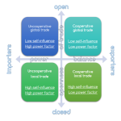
NETSET
Process Diagram for the Networked Sustainable Energy Transitions modelFolyamatábra az összekapcsolt fenntartható energiaátmenetek modellhez
2016

Előadások
Üdvözöllek az előadástárban!
Presentations
Welcome to my presentation repository!
2014
Csíkszereda
Roaming in LadakhBarangolások Ladakhban
Video RecordingVideófelvétel
Video PresentationVideóprezentáció
HTML5 Presentation(interactive)Prezentáció
(interaktív)
Csíkszereda, 2014
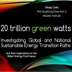
2015
MIT
PhD Qualifying
Oral ExamIdőközi doktori
vizsga
Live PresentationÉlő Prezentáció
Download PPTXPPTX Letöltése
Cambridge, 2015
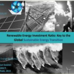
2015
IRENA
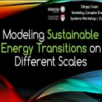
2015
Lancaster University
Energy Modeling
WorkshopEnergiamodellezés
Workshop
Live PresentationÉlő Prezentáció
Download PPTXPPTX Letöltése
Lancaster, 2015
UpcomingKövetkező
PublicationsPublikációk
View my profile and follow my research on: Academia.edu.Látogasd meg a profilom és kövesd a munkám az Academia.edu-n.
International Energy
Workshop by IRENANemzetközi Energia
Workshop IRENA
Live PresentationÉlő Prezentáció
Download PPTXPPTX Letöltése
Abu Dhabi, 2015
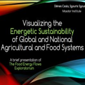
2015
Sapienza University
International Food
Systems ConferenceNemzetközi Élelmiszer
Rendszerek Konferencia
Live PresentationÉlő Prezentáció
Download PPTXPPTX Letöltése
Rome, 2015
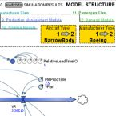
2014
Masdar Institute
Master's thesis
defenseMesteri dolgozat
megvédése
Live PresentationÉlő Prezentáció
Download PPTXPPTX Letöltése
Abu Dhabi, 2014
PhD dissertation
defenseDoktori dolgozat
megvédése
Live PresentationÉlő Prezentáció
Download PPTXPPTX Letöltése
Abu Dhabi, 2016
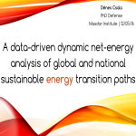
2016
Masdar Institute
Székelyland Summer
conference invited talkSzékelyföld IT konfer.
meghívott live stream
Video RecordingVideófelvétel
Online, 2016
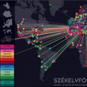
2016
Live stream
Székelyland Winter
conference invited talkSzékelyföld Téli IT
konferencia meghívott
Interactive Present.Interaktív Prezentáció
Video RecordingVideófelvétel
Székelyudvarhely, 2016
2016
Székelyudvarhely
Invited lecture in
climate change classMeghívott előadás a
klímaváltozás kurzuson
Live PresentationÉlő Prezentáció
Download PPTXPPTX Letöltése
Lancaster, 2017
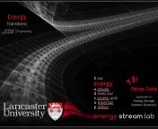
2017
Lancaster University
Social feed
Közösségi csatorna
View CV
Önéletrajz - CV
 csaladen.es
csaladen.esLépj kapcsolatba
Jelenleg
Lancaster-ből (+ 0:00 GMT, + 5:00 EST)
dolgozom.
Lancaster-ből (+ 0:00 GMT, + 5:00 EST)
dolgozom.
Get in touch
Currently I am based in
Lancaster (+ 0:00 GMT, + 5:00 EST)
Lancaster (+ 0:00 GMT, + 5:00 EST)
Dénes Csala
Lecturer (Assistant Professor)
Energy Storage Systems Dynamics
Department of Engineering
Lancaster University
B-98, Old Engineering Building
Lancaster, LA1 4YW, United Kingdom
Lecturer (Assistant Professor)
Energy Storage Systems Dynamics
Department of Engineering
Lancaster University
B-98, Old Engineering Building
Lancaster, LA1 4YW, United Kingdom
Csala Dénes
Adjunktus (Assistant Professor)
Energiatárolási Rendszerek Dinamikája
Mérnöki Tanszék
Lancaster Egyetem
B-98, Régi Mérnöki Épület
Lancaster, LA1 4YW, Egyesült Királyság
Adjunktus (Assistant Professor)
Energiatárolási Rendszerek Dinamikája
Mérnöki Tanszék
Lancaster Egyetem
B-98, Régi Mérnöki Épület
Lancaster, LA1 4YW, Egyesült Királyság

Latest updates
- Our correspondence on German energy policy synchronization was published in Nature!
- Our article on solar PV EROEI in Switzerland was published in Energy Policy!
- Moved to Lancaster, United Kingdom (10/2016).
- Our article on global energy transitions was published in Environmental Research Letters!
- Our recent preprint on sustainable energy transitions was among the top 10 most downloaded in SSRN Energy Politics.
- Our paper on the energy transitions framework has been viewed 4000 times.
- My simulation models, written in AnyLogic top 3 of the 10 categories (Ecosystem Dynamics, Social Dynamics, Competition) on runthemodel.com.
- My research on insurgent dynamics using the GDELT dataset has been featured on the official GDELT blog.
- My research on colorful development has been one of the launch projects of UNDP's development data visualization gallery.
- My data visualizations mapping the religions of Romania have been featured by Kantar Information is Beautiful Awards.
- My crowd estimation about the Csíksomlyó pilgrimage has been viewed over 20 000 times.
- Our correspondence on German energy policy synchronization was published in Nature!
- Our article on solar PV EROEI in Switzerland was published in Energy Policy!
- Moved to Lancaster, United Kingdom (10/2016).
- Our article on global energy transitions was published in Environmental Research Letters!
- Our recent preprint on sustainable energy transitions was among the top 10 most downloaded in SSRN Energy Politics.
- Our paper on the energy transitions framework has been viewed 4000 times.
- My simulation models, written in AnyLogic top 3 of the 10 categories (Ecosystem Dynamics, Social Dynamics, Competition) on runthemodel.com.
- My research on insurgent dynamics using the GDELT dataset has been featured on the official GDELT blog.
- My research on colorful development has been one of the launch projects of UNDP's development data visualization gallery.
- My data visualizations mapping the religions of Romania have been featured by Kantar Information is Beautiful Awards.
- My crowd estimation about the Csíksomlyó pilgrimage has been viewed over 20 000 times.
Hírek
- Rövid levelünk a német energiapolitikia-szinkronizálásról a Nature-ben publikálták!
- Cikkünket a napelemek Svájci EROEI-értékeiről az Energy Policy publikálta!
- Lancasterbe költöztem, Nagy-Britanniába (2016/10).
- Friss cikkünk Sustainable Energy Transitions témában ott volt a 10 legtöbbet letöltött cikk között SSRN Energy Politics kategóriában.
- Eredeti cikkünk a Sustainable Energy Transitions témában 4000 látogatót vonzott.
- System dynamics SET modellem, AnyLogic-ban írva, két év óta vezeti az Ecosystem Dynamics kategóriát runthemodel.com-on.
- A kutatásom a háborúk dinamikájáról, a GDELT adatbázist használva kiemelt volt a hivatalos GDELT blogon.
- A kutatásom a színes fejlődésről volt az egyik kezdő projket az UNDP fejlődési adatvizualizációs blogján.
- Adatvizualizációim Románia vallási térképéről kiemeltek voltak a Kantar Information is Beautiful Awards által.
- Videóm a 2048 játék elméleti határairól több mint 12 000 látták.
- A tömegbecslésem a csíksomlyói búcsúról több, mint 20 000-en olvasták.
- Rövid levelünk a német energiapolitikia-szinkronizálásról a Nature-ben publikálták!
- Cikkünket a napelemek Svájci EROEI-értékeiről az Energy Policy publikálta!
- Lancasterbe költöztem, Nagy-Britanniába (2016/10).
- Friss cikkünk Sustainable Energy Transitions témában ott volt a 10 legtöbbet letöltött cikk között SSRN Energy Politics kategóriában.
- Eredeti cikkünk a Sustainable Energy Transitions témában 4000 látogatót vonzott.
- System dynamics SET modellem, AnyLogic-ban írva, két év óta vezeti az Ecosystem Dynamics kategóriát runthemodel.com-on.
- A kutatásom a háborúk dinamikájáról, a GDELT adatbázist használva kiemelt volt a hivatalos GDELT blogon.
- A kutatásom a színes fejlődésről volt az egyik kezdő projket az UNDP fejlődési adatvizualizációs blogján.
- Adatvizualizációim Románia vallási térképéről kiemeltek voltak a Kantar Information is Beautiful Awards által.
- Videóm a 2048 játék elméleti határairól több mint 12 000 látták.
- A tömegbecslésem a csíksomlyói búcsúról több, mint 20 000-en olvasták.